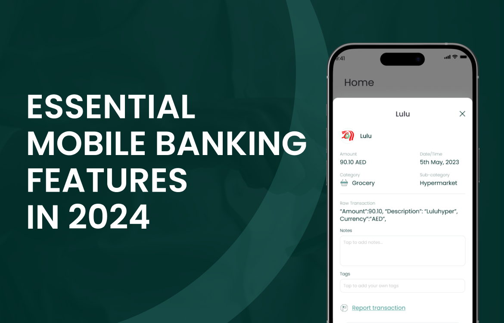
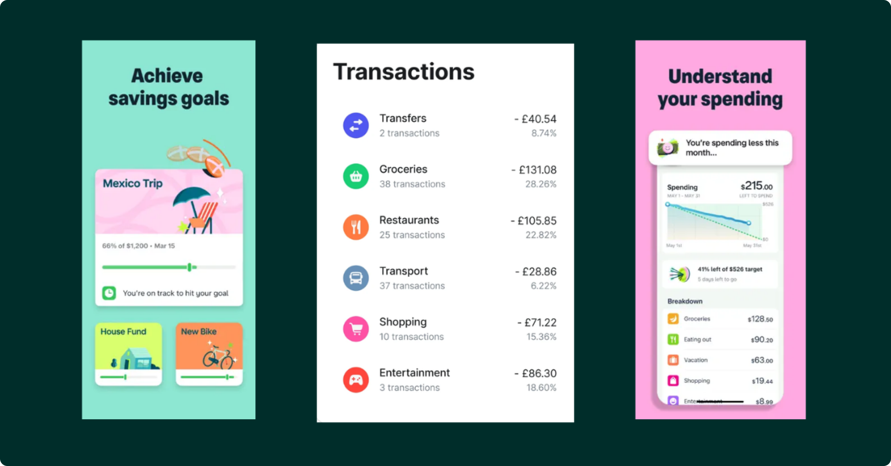
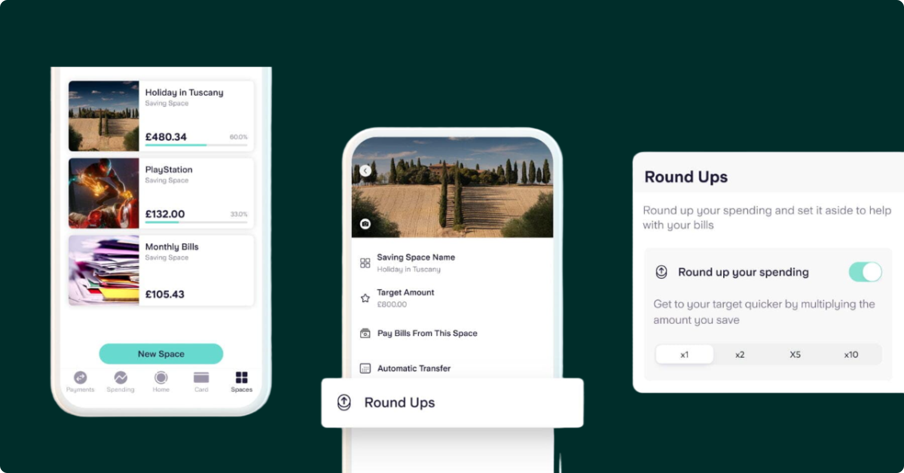
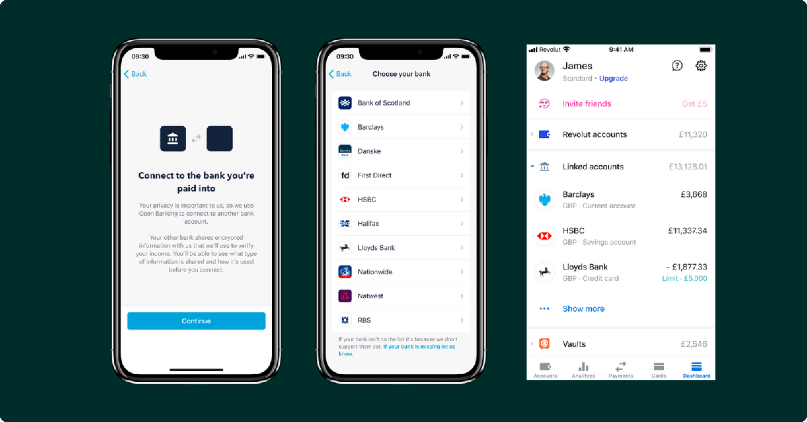
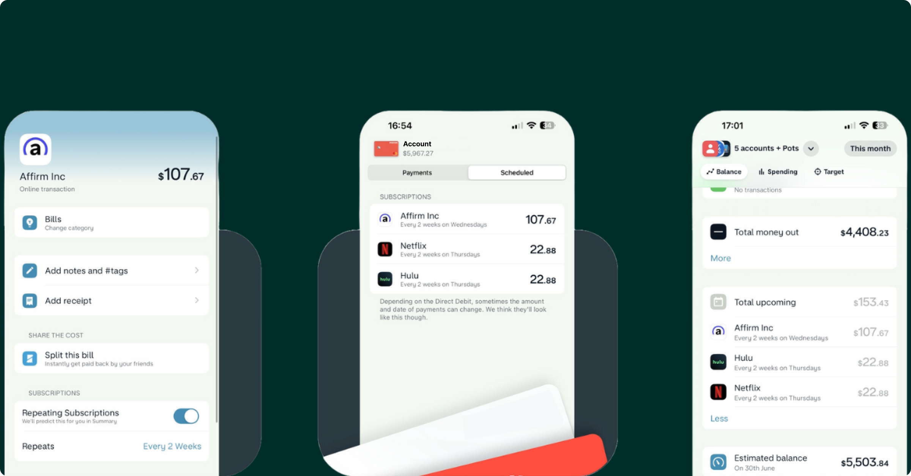
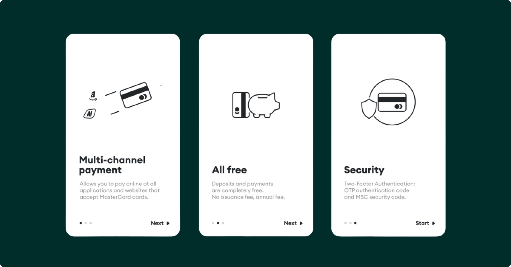
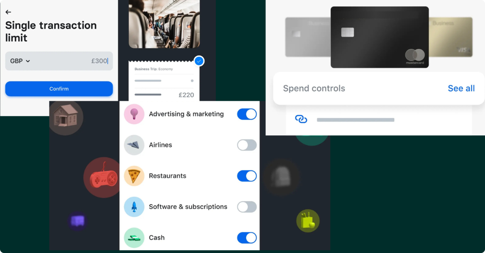
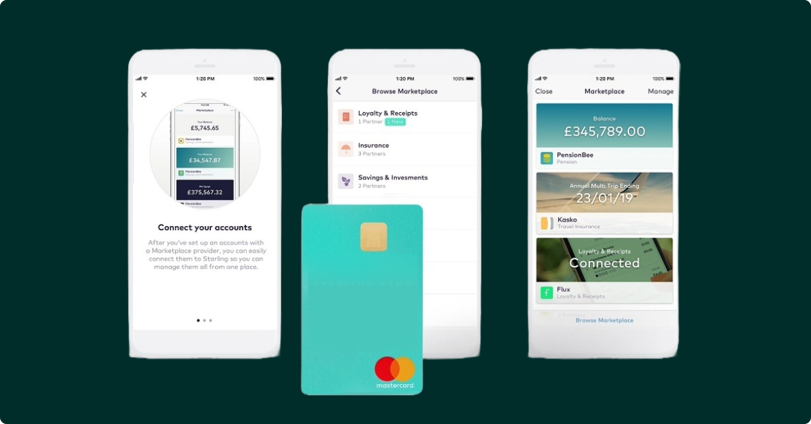
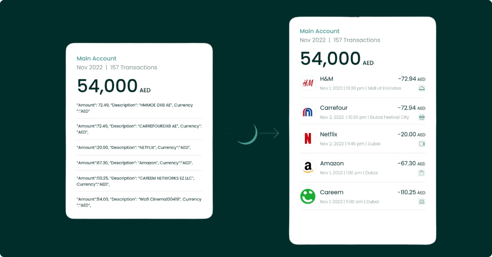

Top 5 Mobile Banking App Features that Consumers Look for in 2024
Mobile banking is continually evolving to meet the expectations of a tech-savvy generation. In 2024, banking apps are transforming into comprehensive platforms that combine daily financial management with user-friendly design and intelligent features.
Published on

Introduction
Mobile banking is continually evolving to meet the expectations of a tech-savvy generation. In 2024, banking apps are transforming into comprehensive platforms that combine daily financial management with user-friendly design and intelligent features.
This progression is part of a broader increase in digital adoption, with users demanding more efficient, reliable, and enjoyable services. Leading banks worldwide are responding by introducing features that seemed futuristic just a few years ago, such as deploying artificial intelligence to personalize banking experiences and designing interfaces that make financial management both straightforward and engaging.
Here are the top 5 mobile banking app features that are table stakes in 2024:
1) Advanced Personal Financial Management (PFM)
Leading the list are Personal Financial Management (PFM) tools, which have gained popularity among mobile banking users. PFM tools offer comprehensive insights and greater control over personal finances. Key features include:
- Expense Categorization
Classifying transactions by ‘category’ and 'sub-category’ enables users to track their spending and detect unusual activities.
- Budget Setting Features
Modern apps provide adaptive budgeting tools that align with users' spending habits, income, and financial goals, allowing precise budget settings across different categories with alerts for nearing limits and tailored advice.

- Savings Round-Ups
Automatically adjusts transactions to the nearest unit and transfers the surplus to a savings account, promoting effortless saving.

- Open Banking-Enabled PFM Solutions
Open banking supports account aggregation, enriching PFM solutions by providing a comprehensive financial overview through multiple account access.

- AI-Driven "Next Best Action" (NBA) & Insights
NBA strategies predict future financial trends and provide advice on optimal financial moves based on users' spending habits and goals.
- Subscription Management
Effective management tools track and review recurring payments, highlight unused subscriptions, and assist in cancellations, ensuring users only pay for what they use.

2) Usage & Spend Gamification
Gamification applies game-design elements in non-game contexts, a method that's proving highly effective in influencing financial behavior. When users earn rewards, badges, or points for reaching savings goals or keeping within budget limits, it adds a layer of motivation not found in traditional banking experiences. Gamification taps into the human desire for achievement and recognition, and as a result, it makes financial management rewarding and enjoyable.
By turning the mundane tasks of tracking spending or saving money into a challenge with tangible rewards, banks have an opportunity to improve user engagement with their apps. This increased interaction fosters better financial habits and greater awareness of spending patterns.
Another advantage is encouraging users to explore parts of the app they might otherwise ignore and increasing their familiarity with the bank's services and products, which might sometimes go unnoticed.

3) Card Controls
Card controls offer immediate adjustments to card settings for enhanced security and improved banking services.
- Freeze/Unfreeze Cards
Instantly freeze a card through the mobile app to protect against unauthorized use.
- Modifying Cash Withdrawal Limits
Adjust cash withdrawal limits as needed to provide tighter financial control directly from the app.
- Adjusting Spending Limits
Manage budgets more actively by adjusting spending limits on cards.
- Geo-location Limitations for Card Use
Set location-based restrictions to prevent unauthorized transactions outside designated areas.

4) Partner-Enabled Marketplace
Mobile banking is expanding beyond traditional services by introducing a marketplace where external partners can offer their products and services within the banking app. This transformation, facilitated by the 'App-in-App' model and open APIs, creates a unified platform for financial and lifestyle needs.
The App-in-App model allows users to manage finances, shop, and access various services without leaving the bank’s app, opening new revenue streams and partnership opportunities for banks.
Open API technology enables secure interaction with third-party applications, broadening the range of services tailored to customer needs.

5) Easily Understandable Transaction Data
Transaction data enrichment is changing how users engage with their banking apps, turning complex transaction details into understandable, useful information. Transaction enrichment improves the banking experience by deepening users' insights into their spending habits.
Each transaction is clearly labeled, allowing users to easily see where and how they spend their money, whether it’s dining out, buying groceries, or watching a movie. The transparency helps users quickly spot any unauthorized charges and strengthens security. Moreover, as the enrichment engine learns from individual spending patterns, it provides customized budgeting tips and improves the way users manage their finances. These advancements are dramatically improving the mobile banking experience, making it more personalized and engaging for every user.

The Future of Mobile Banking
Staying ahead in mobile banking means equipping your team with the tools to better understand users. Through our industry-leading transaction enrichment engine, highly customizable PFM SDK, advanced insights dashboard, and proprietary “Smart Nudges,” Lune can help you uncover valuable insights and create more personalized offerings. For a partnership that supports smarter decisions and delivers what your users seek, connect with us at Lune.